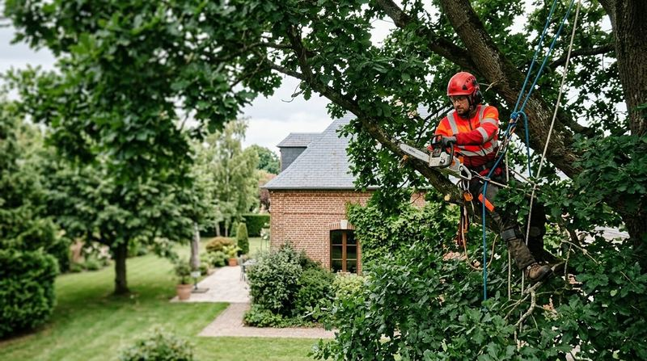
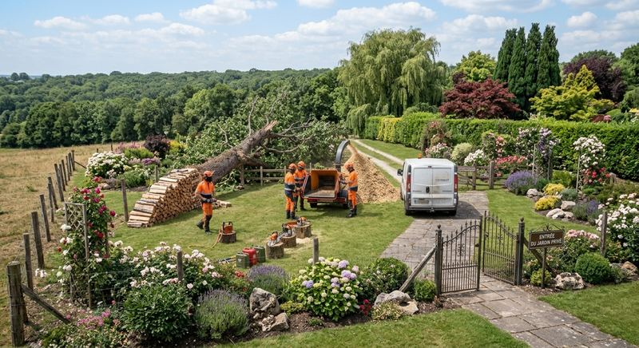
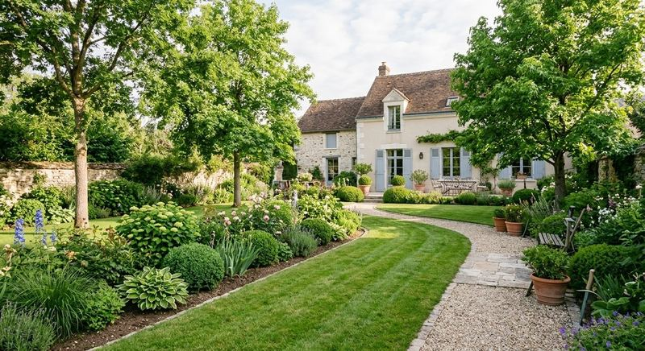
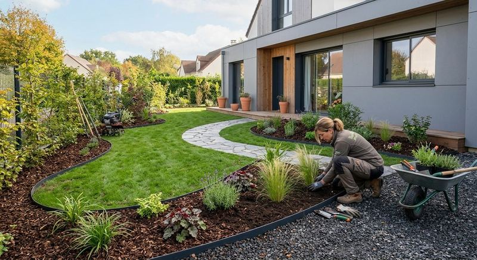
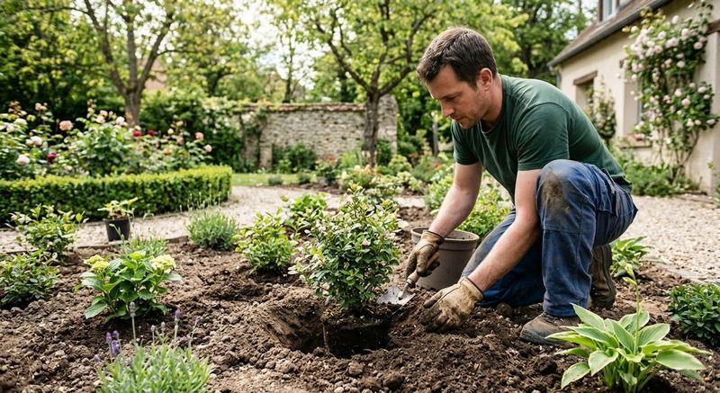
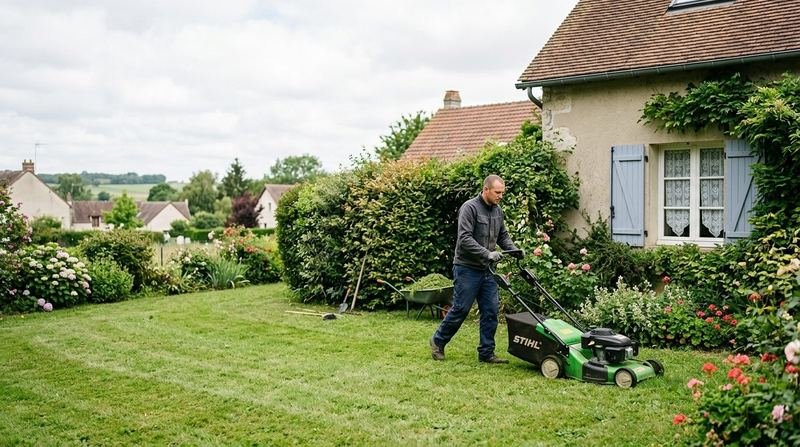
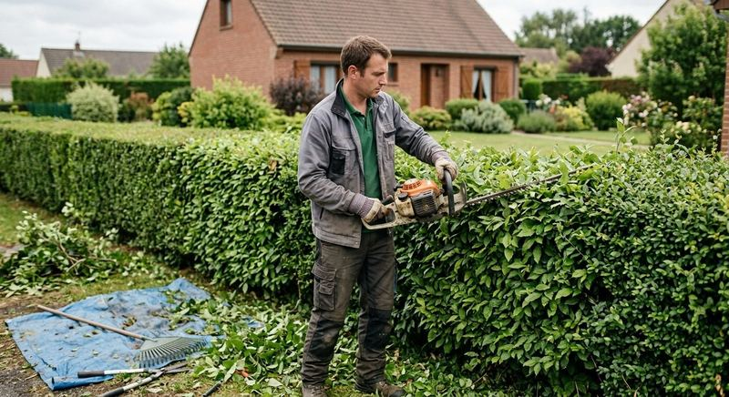
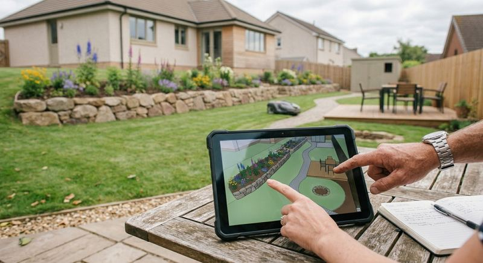

Élagage
- Taille et entretien des arbres
- Interventions en hauteur, même complexes
- Arbres de particuliers et de copropriétés
CALICE ESPACES VERTS intervient à Viry-Châtillon et dans un rayon de 20 km autour de Savigny-sur-Orge : élagage, abattage, création et entretien d'espaces verts.


L'arbre est au cœur du métier de l'entreprise, y compris quand le terrain est difficile.




L'entreprise transforme et embellit vos extérieurs, quelle que soit leur surface, pour leur apporter une ambiance naturelle personnalisée.
Parler de mon projet

Entretien de jardins de particuliers et d'espaces verts de copropriété : un suivi régulier qui garde les lieux nets et soignés.
Demander un devis
L'entreprise intervient dans un rayon de 20 km autour de Savigny-sur-Orge, en Essonne. Pour savoir si votre commune est desservie, un appel suffit.
06 95 03 38 73Décrivez votre besoin : nous vous répondons pour en discuter.